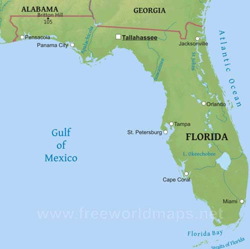

Since Florida is located between the Atlantic ocean and the Gulf of Mexico, it is known to be one of the states with hazardous hurricanes. There are various companies using different materials to create hurricane resistant homes that would allow homes to be safe after a hurricane has occurred. The improvement for the right materials to use for these hurricane resistant homes is still happening.
Back to main page